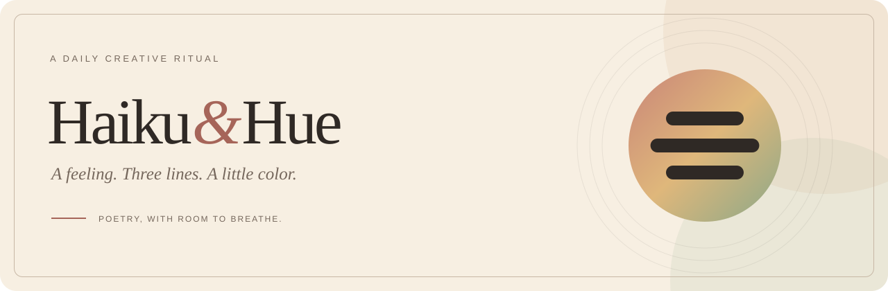
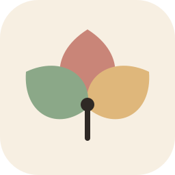

01 / PoetryWorking lead
Three lines
Structure from the poem. Color from the mood. A spare, recognizable mark that has room to grow with the studio.
Download SVGIdentity explorations / 01

Poetry meets a little color
A compact poetry mark, a daily almanac, or a small bloom. Original vector explorations for a quieter creative studio. The first direction leads the README; the identity is still open.
Structure from the poem. Color from the mood. A spare, recognizable mark that has room to grow with the studio.
Download SVGA page, a sunrise, a reason to return. A literary direction for the growing collection of ordinary, meaningful days.
Download SVG
Three petals, more than one feeling. A softer, expressive symbol for the places where different moods meet.
Download SVGIn the small moments / color
After dark / single ink
#F7EFE2#2F2925#75675C#C98578#DFB77B#8BA888